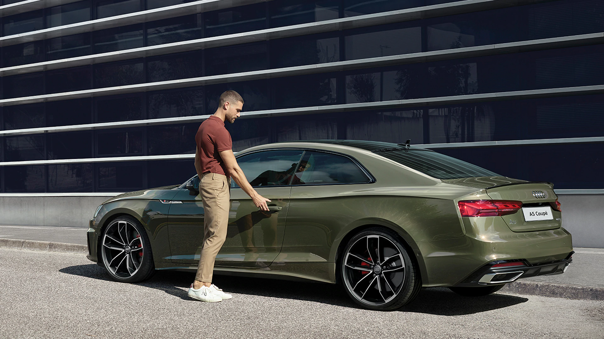

With the imposing Singleframe in octagonal design, the Audi Q8 is the new face of the Q family. The brawny radiator grille stands upright and, together with the spoiler that has been drawn toward the front and the large, highly contoured air inlets, emphasizes the self-confident look . The elegantly sloping roofline terminates in gently inclined D-pillars and rests against the quattro blisters above the wheel arches. A light strip connects the units at the rear.
Control the digital world of the Audi A5 Coupé intuitively on the 10.1-inch MMI touch display with haptic feedback and experience the Audi virtual cockpit, whose customizable operation, intuitive menu guidance and driver-oriented display dispenses with unnecessary complexity and always shows the key driving-related information in your field of view.
The purely mechanical center differential transfers the forces to the front axle and rear axle at a ratio of 40:60 as standard. When required, it transfers the majority to the axle with the better traction.Besides the standard progressive steering, whose steering ratio becomes increasingly direct the further the steering wheel is turned. The 3.0 TFSI engine is particularly efficient thanks to the new mild hybrid technology (MHEV).

The Audi drive select let you experience a driving sensation tailored to your preferences: with the dynamic, comfort, auto, individual settings, the driving style can be adapted at any time. To increase efficiency, the TFSI engines also include a 12V Mild Hybrid system. quattro drive with ultra technology, which delivers extraordinary dynamism, is also available for certain engines.
